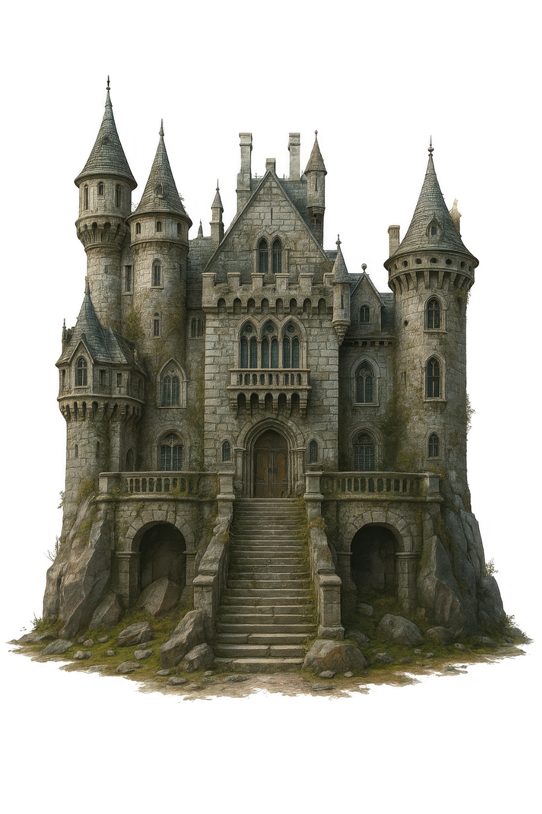

CASTILLO ABANDONADO
Explorando los alrededores, encuentras un castillo colonial en ruinas, cubierto de vegetación. Dentro, ves armaduras oxidadas y muebles destrozados por el tiempo.
Al fondo, una escalera de caracol desciende a la oscuridad. También notas una biblioteca con libros polvorientos que podrían contener información sobre la cripta.
El viento gime entre las grietas de las piedras.
